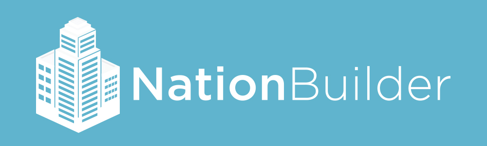

Welcome to Radish Lab’s mini guide to NationBuilder!
This site is a general introduction to the NationBuilder platform chock full of useful tips and tricks to get you started. It’s geared towards developers (but, helpful for anyone with a bit of coding knowledge) looking to learn useful concepts, strategies and approaches to the platform.

We won’t cover every topic in detail, but hope to fill gaps in the current NationBuilder resources out there and provide some general guidance for acclimating to the NationBuilder environment. This guide was created by Radish Lab as an internal resource, but with the support of the NationBuilder team, we’re happy to make it available to all.
Who We Are
Radish Lab is a full-service interactive creative agency based in Brooklyn with an office in Berlin, focusing on people and projects committed to social change. We build innovative websites, applications, data visualizations, and interactive experiences for non-profits, cultural institutions, and all sorts of social impact organizations.
We’re also certified NationBuilder Architects and committed to the open exchange of knowledge and inspiration. If you have any suggestions or questions, please let us know. And if you’d like to contribute to this project, don’t hesitate to send a pull request or email us.
About NationBuilder
NationBuilder is an online content management system with a host of built-in features. Essentially it’s a platform for making websites with a ready-made framework for organizing, coordinating, and communicating with users. It can be a great option for nonprofits, educational institutions, advocacy groups, and political organizations; anyone who wants to raise funds, hold an event, boost awareness, spark action, or create a movement.

Among its many components are a robust donation platform, volunteer admin system, calendar and event ticketing integration, and some powerful sharing tools. So it’s a complex piece of software, but the more you work with it, the more you see the thought that went into making every piece connect as seamlessly as possible.